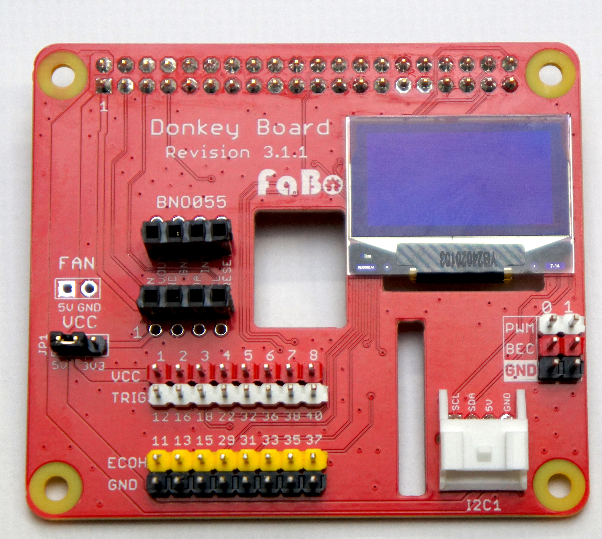
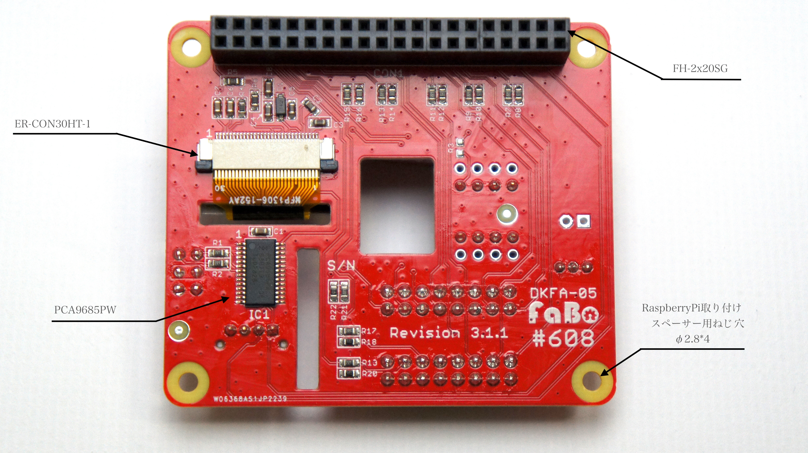

Raspberry Pi用AI Car Board DKFA-05
コード番号:DKFA-05
Revision 3.1.1
外観
表

裏



※ピン番号は物理ピン番号になります。
特徴
本ボード搭載のPCA9685がESCやサーボを制御するためのPWM信号に変換し、より安定した信号を出力します。
最大8個の超音波センサー(HC-SR04)との接続をわかりやすくかつ確実なものとします。
有機ディスプレイによるRaspberry PiのIPアドレスなどの情報を表示
I2Cバス拡張コネクタ付き
フュージョンセンサーモジュール（BNO055）が簡単に拡張できます。（別売）
使用できるRaspberry Pi
| 対象ボード | |
|---|---|
| Raspberry Pi 3B＋ | 対応 |
| Raspberry Pi ４ | 対応 |
| Raspberry Pi 5 | ーーーー |
回路図

画像をダウンロードしてください。
実装図
表

裏

DKFA-05 BOM
| Quantity | Reference | Name | Model | Vender |
|---|---|---|---|---|
| 4 | C1,6,7,8 | セラミックコンデンサ 10uF 0603 X5R | ||
| 4 | C2,3,4,5 | セラミックコンデンサ 1uF 0603 Y5V | ||
| 1 | CON1 | 40pin (2×20) ピンソケット | FH-2x20SG | 秋月電子通商 |
| 1 | CON3 | JST PA 2mm 4pin コネクタ | S04B-PASK-2 (LF)(SN) | 日本圧着端子製造 |
| 1 | D1 | 小信号汎用ダイオード 100V 2A | 1N4148W | Diodes Incorporated |
| 1 | FAN | 2.54mm ピッチピンヘッダ 各1列１極 (赤、黒) | ||
| 8 | HC1~8 | 2.54mm ピッチピンヘッダ １列8極 (赤、白、黄色、黒) | ||
| 1 | IC1 | 16チャンネル, 12ビット PWM Fm+ I2CバスLEDコントローラー | PCA9685PW | NXP |
| 1 | JP1 | 2mm ピッチピンヘッダ3列 １列３極 及び 2mmジャンパーピン１個 | 秋月電子通商 | |
| 3 | PWM0,1 | 2.54mm ピッチピンヘッダ １列２極（白、赤、黒） | ||
| 1 | R3 | DNP | ||
| 1 | R4 | チップ抵抗 390K 5% 0.1W 0603 | ||
| 1 | R5 | チップ抵抗 10K 5% 0.1W 0603 | ||
| 1 | R6 | チップ抵抗 100 5% 0.1W 0603 | ||
| 10 | R1,2,7,9,11,13,15,17,19,21 | チップ抵抗 220 5% 0.1W 0603 | ||
| 8 | R8,10,12,14,16,18,20,22 | チップ抵抗 470 5% 0.1W 0603 | ||
| 1 | U2 | 30 Pin 0.5mm Pitch Top Contact ZIF Connector,FPC Connector | ER-CON30HT-1 | buydisplay |
| 1 | DISPLAY | 128x64ドット0.96インチ青色OLEDディスプレイ | Blue 128x64 0.96" OLED Display w/Top Contact Connector FPC, SSD1306 | buydisplay |
| 1 | BNO055 | 分割ロングピンソケット(細ピン用) １列８極 | FH2.54-40U1GF8.5-0.5 | 秋月電子通商 |
※予告なく仕様が変更されることがございます。